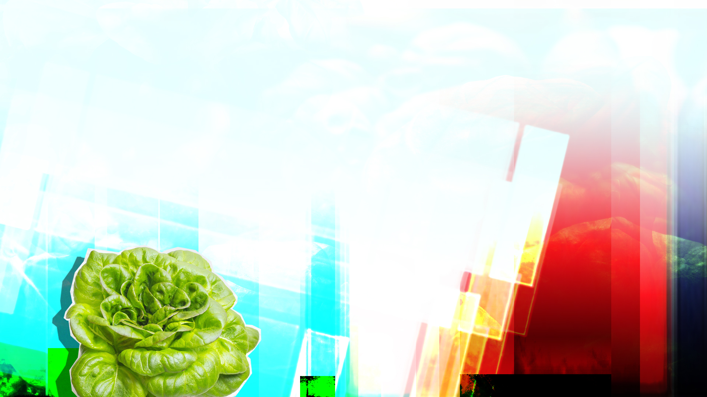

Better living through plant chemistry
I'm setting myself up to learn how to grow food at home for me and my family. Living in a city that promotes isolation and competition with no ability to grow my own food makes me vulnerable. Over the past twelve months, the scarcity of food and home goods have reminded me that having food is not something I can take for granted. My aim with learning to grow my own food at home moves me one step closer to security. It can also be good for our planet.
Since I moved to San Francisco sixteen years ago, I’ve watched the culture move from one of a struggle to provide mutual aid for artists and all who want to live here, to a struggle for dominance between businesses reluctantly supporting the community so they can take advantage of a concentration of talent (read: people, humans) in the San Francisco Bay Area. This area used to be considered just north of Silicon Valley, but now it’s the epicenter.
Technology has provided a great many things. My health and well-being are a product of new techniques and technology as much mindfulness and self-care. Crohn’s disease has been my constant companion since I was diagnosed at a young age. And as much as I would have enjoyed the true Midwestern experience of eating candy, cake and Spaghetti-O’s, it was never my lot. I grew up on broiled chicken, vegetables at every meal and a good deal of pasta (which I later discovered was source of pain and discomfort due to wheat flour).
My health is fragile. It’s not something I can count on day to day. I’ve been tracking a number of shifting variables like sleep, exercise, diet and mood since I was a child. The quantified self movement here in the Bay Area was a non-starter for me, since I didn’t understand the drive to want to self-monitor and report back on yourself constantly. Seen in the perspective of health, it can be a burden. Seen in the perspective of digital industrial capitalism, it’s the way to survive and possibly thrive.
My premise, albeit tentative, is that to thrive, one ought to include as much of the local community as possible. I’ve been thinking recently about what it would be like to live sustainably, in a house on land where I can grow food and produce energy for myself and possibly for my neighbors. This would be a community where I know people who live nearby so that we would be able to look out for one another. In the past five years of living in San Francisco, I’ve had a handful of meaningful conversations with neighbors. In Oakland before that, maybe more. But on the whole, even growing up in Michigan, I don’t recall a great gathering of like-minded people supporting each other. When I was five years old, I remember conversations about “What if?” and how we might shape the future. I participated with groups like 4H and Future Problem Solvers, and it was all theoretical and distant. My life is no longer distant.
I live indoors much of the time, since I am in an at-risk category for COVID-19, the present pandemic. When you, whomever you are, read this article, it may be during the next pandemic. Or the one after that. Whatever the case, I wish you well and I hope you are safe and feeling contented. If I’ve learned anything from wise souls like Brett Cook, Greg Jagiello and Marcia Black, it’s that feeling contented – focusing on and truly listening to your own needs – will help you to feel empowered to do what you need to do in the world.* At present, I neither feel like I fit my environment, nor do I feel like I trust my environment to provide for me. What is changing however, is my relationship to my sense of self-capacity.
It’s becoming clear to me that with the Great Advances in Technology™ I’m now able to grow food in my apartment. I’m also able to capture energy from the sun to store and power electronics. I can recycle food scraps through compost on behalf of growing food. All of these things (sun, heat, waste) are common and available in the natural world and it’s just starting to click for me how they can be available to me indoors (where, I might add, I still exist in the natural world, though sheltered).
I’ve recently finished reading Ecotopia by Ernest Callenbach. The Ecology Center in Berkeley held a retrospective on the work they’ve been doing to bring the world closer to the reality portrayed in the book. In short, the book represents a fictional nation called Ecotopia which is roughly the area from Washington state and Oregon down to Northern California, including the San Francisco Bay Area. The book covers not only the way that Ecotopians live and think about stable-state, but it offers reflections on state violence and what it means to truly secede from the United States of America. We are, for better and recently for worse, in it together if we wish to keep this assemblage of states together and cooperating with one another.
Some of the cooperation in Ecotopia includes ideas like worker-owned factories of about 300 employees to reduce monopoly power. 20-hour work weeks, to allow more people to work and maintain a stable home life. Universal basic income, to ensure there is necessarily no under-class and that people can opt-out to make art even if that means that they are not “giving back” to the larger economy by purchasing more than basic necessities (they even have a “core store” in Ecotopia for just this need). Throughout the book, the author demonstrates that the changes required to make our world sustainable and stable-state are easier to accomplish than we think. Any one of the changes listed above can help, and for me, that change is how I produce and consume my food.
Being home all year and having groceries delivered has made it painfully clear where I am and where I am not.** When I order fruit and vegetables they often have labels that show they were imported from Mexico or other countries. It makes me sad that we’ve found an economic excuse to import food rather than grow it here in California. It’s become more viable to fill up a truck with fruit from Mexico, haul it up the freeways to the grocery store near me, store it here until I order it, then put it in another car to bring it to my home. Were it not a risk for me to visit the grocery store, I’d be happy to bring my reusable bag and walk to the store so as to cut out that last step, but the truth remains, I wouldn’t be changing much. I’m not removing the buying relationship between the grocery store and the farm. I’m not changing who gets hired to pick and ship the fruit. I’d barely be changing the amount of transportation needed. Moreover, I wouldn’t have chosen to buy food outside of my area given that California has some of the most vibrant land for growing fruits and vegetables. California is known as much for its agriculture as it is for technology. Yes, there are farmer’s markets I can visit and services that can bring me local food, but I’m curious why it’s become so difficult to buy local groceries at a store near me. It seems like a simple thing.
This article and others to come are an attempt for me to put in writing and share as widely as possible how I’m approaching these problems. I want to share my attempt to grow food at home as a first step towards understanding how to live a sustainable life. I’ve worried at times this means I want to "check out" from society, but I reject that notion for the sole reason that I’m seeking community and companionship on this journey.
I'd like to know in what ways this is possible and how it impacts me and my family. I’d also like to see more peace and calm my life. Growing my own food would give me one less thing to worry about. Meeting folks who are also exploring this path would help me worry less about whether I am “doing the right thing.”
My belief, which is not unique to me, is that I want to live in a society where I can sustain myself and be more connected with my community. I can work on behalf of myself and my family to ensure we thrive. We can be good to ourselves and our planet, because our planet supports us. It's a team effort. Person and planet. Same place, same team.
Even if we lived outside of Earth and somewhere else in the known solar system, we'd still be bringing seeds to plant and grow foods from this planet, this climate.*** Our home.